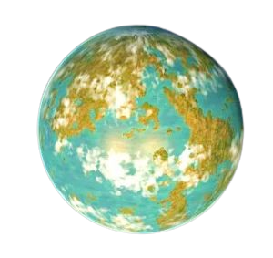

Tellar-prime
Tellar Prime or Tellar was the inhabited prime planet in the 61 Cygni system. It was the homeworld of the Tellarites, a warp-capable humanoid species.The planet was renowned for its healing bogs, which were used for therapeutic mud baths. For those that want to know more

Location
61 Cygni was an inhabited binary star system consisting of the stars 61 Cygni A and 61 Cygni B. This system was located approximately eleven light years from the Sol system, part of the constellation Cygnus. The system was located in the Alpha Quadrant.